2018 年 4 月 3 日，Intel 在北京举办了第八代酷睿移动处理器全球发布会，正式发布了全新的第八代酷睿移动处理器。很多小伙伴其实对 intel 的芯片很感兴趣，但是一但深入了解，很快就会被扑面而来的晶体管，微架构，纳米，CPI，睿频，超频，缓存等概念搞疯………
为何 CPU 工作如此迅速，为何主频变化多端，纳米级别的工艺到底是外星文明的帮助还是人类智慧的结晶，一片薄薄硅圆晶上到底隐藏着怎样的秘密，就让我们大家一起走一走“芯”吧……
先说说，芯片到底是个什么东西。
芯片，就是我们说的 CPU，又名中央处理器，常说芯片是一个机器的大脑，重要性可见一斑，它负责计算机多项工作的完成，快速处理数据，并把工作分类并传输指令给计算机的其它部件，这有点像一个物流中心，要把源源不断又种类繁多的数据“包裹”分析，分类，处理，传送……
所以，要不我们就把它比作一个物流中心好了，为方便理解，我们就从甄老板要开一个物流厂说起吧……
从沙子到芯片
甄老板要开一个物流厂，首先第一件事，当然是要选一块地，芯片物流厂的用地要求比较奇怪，它是需要建在沙子上的，因为工厂要顺利运行，需要一种沙子里面含有的特殊元素，si（硅），这也就是我们熟知的 CPU 是由沙子造的。
但是我们知道沙子上是不能直接建厂的，所以沙子需要特殊处理，这个处理就是通过一系列的提纯及切割，获得芯片基座-圆晶的过程。
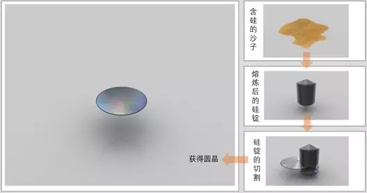圆晶（Wafer）是芯片的基础，是由硅纯度 99.9999％ 的硅锭切割成的薄片。在这个基础上，芯片制造商们将展开体现人类制造智慧的顶级工艺。当然，为了好理解，我们还是回到工厂的建造上来吧。
纳米技术及微架构
好了，现在工厂有了地，但是怎么建造流水线设施，让工人好好干活呢？
当然得找个牛一点的设计师先设计一下厂房的构造， 越牛的设计师，设计得越精巧，就是我们说的“工艺”，随着时代的进步，设计师们的精细度也从 45nm 级的设计，逐步精细化到 32，22，甚至现在的第八代 14nm，工艺越好，能容纳的工作单位（晶体管）就越多，一个针尖就有高达 5k 晶体管，当然也就意味着可以在工厂干活的人也越来越多，干活的速度也就能越来快啦……
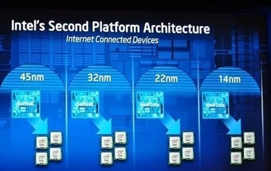设计师们还得去设计厂房的具体布局，比如这条流水线应该从左往右，还是从上到下呢？这种布局就叫微架构，当然布局过程非常复杂，介于我们都不是学建筑的，具体的工序也没必要特别了解，通俗点讲可以看作是一个在晶圆上做微雕，雕出众多晶体管的过程……这个东东的技术性和复杂性都已经登峰造极了，下方的部分工艺大家随意感受下就行……
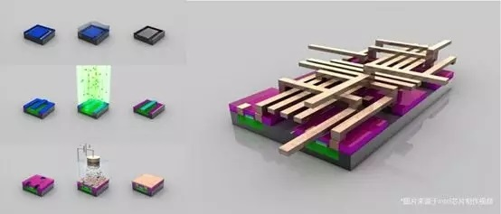架构决定了芯片的性能和功能，设计师们为了工人们能更快，更好的干活，并且能处理更多新出现的任务，在架构上简直绞尽脑汁，尽善尽美，所以在工艺进步的同时，也经常在架构上推陈出新，比如第八代 Intel 就是“coffee lake-H”设计代替了前一代的“kabylake-H”的设计。
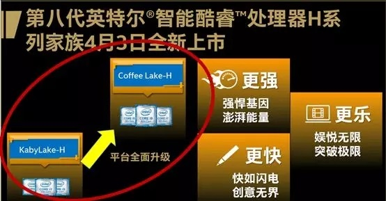不过微微吐槽一句，Intel 的架构命名还真是好喜欢用地名啊，不是这个湖就是那个桥，可能是想表明他们就是个跟土建沙石有关的公司吧（……大误）。
晶体管做完之后，后续还有一系列的测试，切割，封装等工序，圆晶就变成了一块块芯片，我们的工厂也就建好啦。
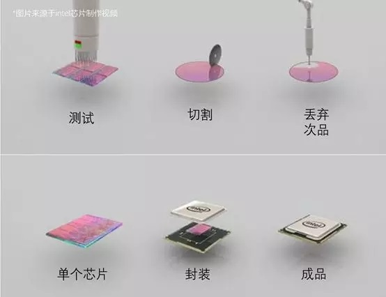虽然讲的很简单，但其实背后有很多的尖端工艺，Intel 作为金字塔的顶端，也只有 70% 的成功率，所以芯片行业真是汇集了精英资本和精英智慧的一个产业啊，不是高帅富的大佬还真的玩不起，当然这也是为什么，世界上的芯片制造商屈指可数的原因。
工厂总算建好啦，工人们各就各位，开始干活吧……
时钟频率与核心
人和厂都准备好了，但是人实在太多了，如果不好好管理的话，也会乱套，所以甄老板找了个大喇叭统一喊“1，2，1，2”，让工人们有节奏地干活，这个“1，2，1，2”就是时钟频率。
通常意义上我们把它认为是 CPU 的主频，主频越高，说明工人们干活越快，CPU 的速度也就越快，一般我们能看到就是 xxGHz 这样的显示，数值越高，说明速度越快。
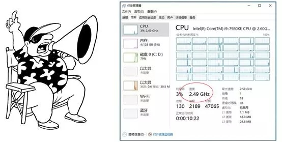当然甄老板为了效率能更高点，可能会同时建 2 个或者 4 个厂房，就我们熟知的双核 CPU，4 核 CPU，这样通过协同，工人们的效率就更高，单位时间能处理的活也就越多。
而这样根据不同的等级，CPU 也就有了 i3，i5，i7 之分（现在还出现了 i9 级 CPU），等级越高，主频表现越好，工厂越有效率，而在第八代的 intel 芯片中，又有了划时代的产品：首次出现了 6 核的移动平台 CPU。
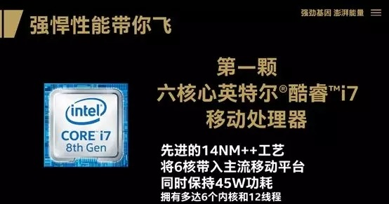这颗芯将主流移动计算提身高了 6 核的时代（需要说明的是服务器及商用领域其实早就已经出现 6 核，但是移动平台是首次），当然，我们在这一张图中除了看到熟悉的 14 纳米制程工艺，核心数之外，还看到了另外的参数，一是功耗，一是线程，功耗我们放后面说，先说说线程。
线程、睿频、超频
还是举工厂的例子，甄老板在厂房布局（微架构）及工人数量（晶体管）的布置上已经到了极限，还想提高效率怎么办呢？就要说到我们下面的概念了线程和超线程。
线程其实是个虚拟概念，类似于工厂外面排好等待处理的包裹队列，一般每个核心对应着一个线程，包裹按顺序进入工厂，这样 CPU 就可以有条不稳地工作了
而超线程相当于一个核心对应了两条队列，两条队列上的包裹按工厂的处理能力依次进入厂房，道路宽了，也让整个进程更有效率。
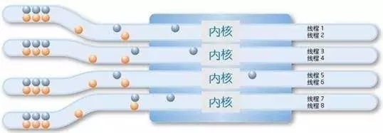然后工厂这边，任务突然多了起来，处理速度也要相应的提高，甄老板想到了一个办法，号召想多干活的工人们去拿加班奖励，一部分工人当然积极响应，多出来的任务很快完成了，这个自主接收激励的动作，就叫睿频。
睿频：是指当启动一个运行程序后，CPU 会自动加速到合适的频率，而原来的运行速度会提升 10%~20% 以保证程序流畅运行的一种技术。睿频是 intel 的一个重要技术，也是智能 CPU 的基础，这项技术被运用到了 intel 的全系列，包括第八代 CPU。
下图就是最新的睿频技术，可以提升至 4.8Ghz，完成峰值任务 so easy！
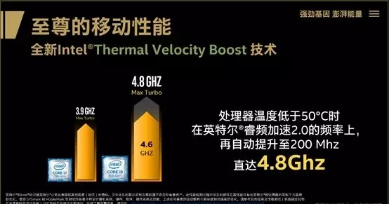当然，有时候工厂的活特别多，自愿去加班的工人都完成不了了。这时候甄老板不得不放出了“全体人必须加班“的大招，将工厂的速度强制提升到某一个值上，这个动作叫做超频。
超频：用户强制将处理器的所有内核运行在规格限定频率范围之外，以求更好的速度。这个动作通过给 CPU 加压实现的，虽然可以提升效率，但有时候也会损伤元件，各位少侠，请慎重使用哦。
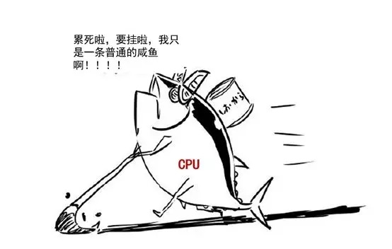缓存与傲腾
经过一系列的处理，工厂的生意越来越好，但是甄老板渐渐发现，这个厂，有！问！题！
因为他发现，每次包裹传送带都要从很远的“内存仓库“甚至更远的“硬盘仓库”传送，路途遥远，耗费时常不说，还经常丢失包裹。
痛定思痛，甄老板决定在厂房的周围自建仓库以临时存储待处理的包裹，离厂房最近且最快的叫一级仓库，但因为地价比较贵，所以一级仓库的面积最小，以此类推，又建了二级仓库，三级仓库，三个仓库配合无间，让包裹能不间断地运送到工厂。
这就是 CPU 一，二，三级缓存的概念（下图中其实只能看到三级，因为一二级太小了）。
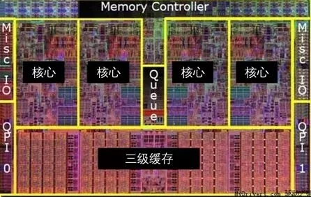后来 Intel 认为，3 级缓存已经跟不上现在的时代，所以在最近的第八代 CPU 中，直接在芯片上建了了内存仓库大小的超级缓存，就是“傲腾”。
这个可选配的“傲腾”内存，这大大提高了用户的峰值速度，也让电脑在大任务面前，终于可以轻松起飞。
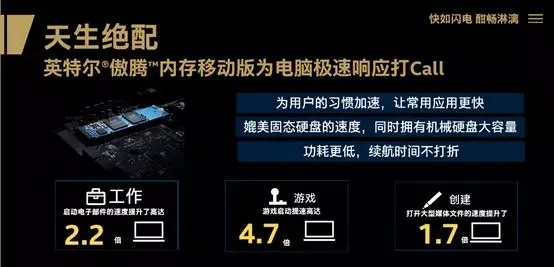能耗
刚刚借着 intel 第八代 CPU 普及了很多芯片上的参数，最后说说能耗一般效率越高的工厂，当然能耗就越多，放在 CPU 上，意味着更废电，以及发热更大，所以保证运行的稳定，CPU 主频往往到一定阶段就不再上升了，能耗性能如何平衡？也是考验 CPU 厂商的一个关键。
不过 Intel 在这方面处理得还是相当不错的，可以说是极大的兼顾了速度与稳定在第八代的 Intel i9 CPU 中还首次实现了移动智能不锁频的技术，可以说是很艺高人胆大了。
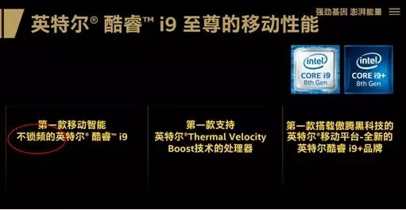结语
熟悉 intel 的人对这个发布会还是有所意料，因为毕竟我们都已经知道，Intel 遵循 tick-tock 开发模式，两年更新一个工艺，隔年更新微架构，不过这两年 intel 在工艺上已经遥遥领先于对手，所以新 CPU 在工艺上的更新并没有太大，但转而在架构上进行调整，以适应现阶段如 4K、VR、娱乐、游戏、无线技术等更应用化也更新的多任务的处理。
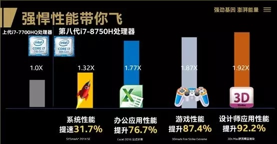不管怎么说，一代确实比一代好了，而随着时代的发展，Intel 也逐渐由原来单纯的芯片厂商，逐渐开始在自家的处理器上集成显卡、内存（四级缓存），不满足做个快递大厂，开始做店面，还包了飞机火车轮船，直接开始打开了地图打野模式……
当然乐见的是，技术的革新为新硬件的诞生也提供了坚实的基础。
未来已来，我们拭目以待！